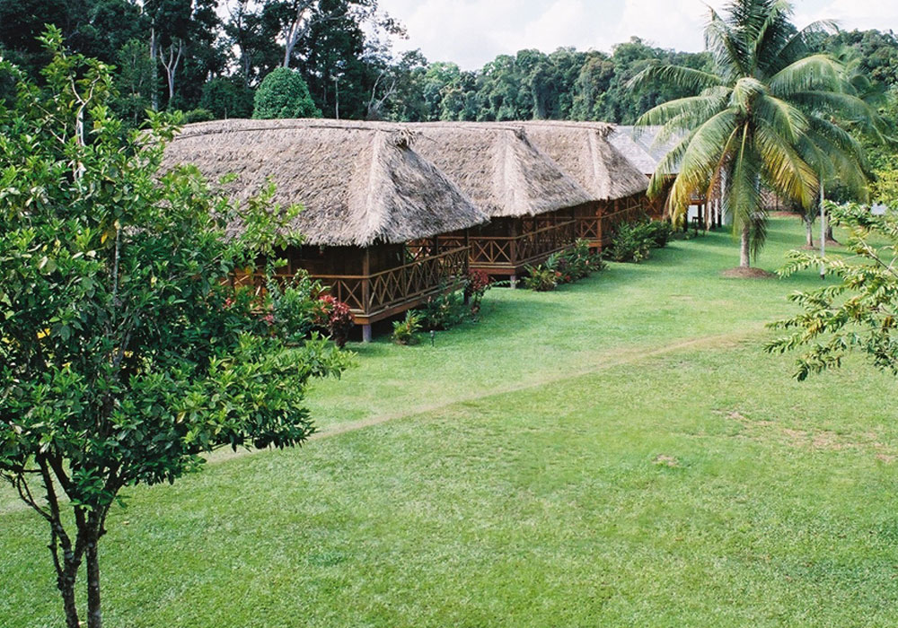
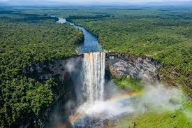
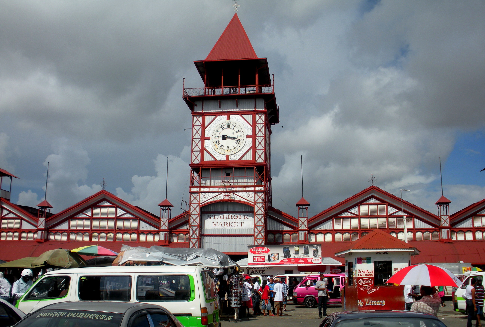

Travellers often come with extensive checklists when visiting the protected areas and pristine rainforests. Visitors come to Guyana hoping for glimpses of giants such as jaguars, arapaima (the world’s largest-scaled freshwater fish), giant anteaters, harpy eagles, capybaras, giant river otters, black caimans and the world’s largest lily, Victoria Amazonica. Other heart-stoppers include puma, leatherback turtles, bird-eating spiders, several species of monkeys and a host of snakes – bushmasters, anacondas, rattlesnakes, labarias and corals.

Iwokrama
Providing assurance for a clean and healthy environment for visitors and staff at Iwokrama locations. The Iwokrama Hygiene and Sanitation Protocol is an addition to Iwokrama’s Safety and Health Manual. This new protocol is implemented as a result of the COVID – 19 Pandemic. It includes new guidelines and procedures to ensure a safe and healthy environment for staff, tourists and other visitors. This Protocol is subject to change without notice and is based on current Government of Guyana regulations and other health and safety best practices.
Learn more

Kaieteur Falls
The water of Kaieteur, one of the world’s natural wonders, flows over a sandstone conglomerate tableland into a deep gorge – a drop of 741 feet or 5 times the height of Niagara Falls. There are no other falls in the world with the magnitude of the sheer drop existing at Kaieteur. Amerindian legend of the Patamona tribe has it that Kai, one of the tribe’s chiefs (after whom the falls is named), committed self sacrifice by canoeing himself over the falls. It was believed this would encourage the Great Spirit Makonaima to save the tribe from being destroyed by the savage Caribishi.
Read more

Read more
Georgetown
In 1842, the Georgetown Town Council designated the current location of the market on Water Street, officially recognizing it as a market despite the fact that it had served such a capacity for quite some time. The market was designed by an American engineer Nathaniel McKay,and constructed by the Edgemoor Iron Company of Delaware, USA over the period 1880-1881.Construction of the iron and steel structure was completed in 1881 and may be the oldest structure still in use in the city. The market covers an area of about 80,000 square feet (7,000 m2).[4] and houses a wide variety of items for sale.